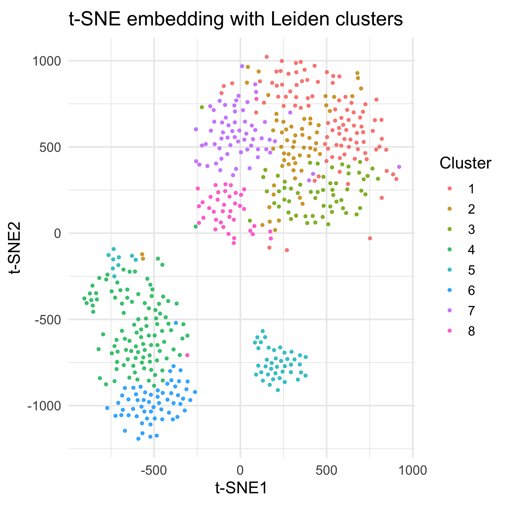
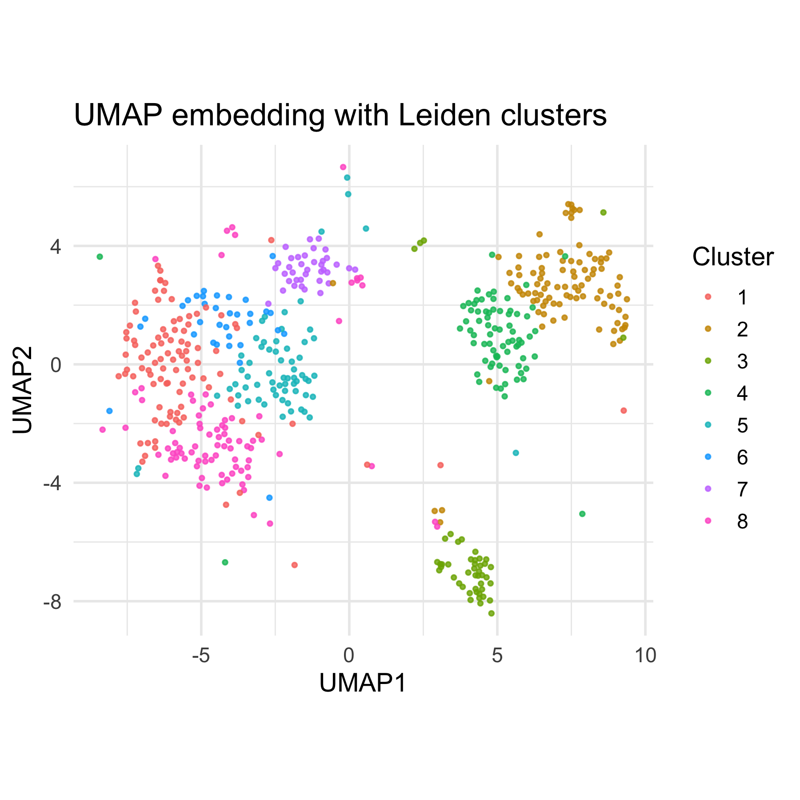

An interactive scRNA-seq platform featuring my custom-built preprocessing and Leiden clustering backend, co-authored as a Go/RShiny system (v1.0) with teammates Qinglin Kong, Amy Ji, and Yinan Elise Zhu, and later independently refactored into Python (v2.0) for upgraded UI usability and embedding precision.
In traditional "bulk" RNA sequencing, scientists grind up an entire tissue sample to measure average gene expression across millions of cells. In contrast, single-cell RNA sequencing maps each RNA transcript to its cell of origin, profiling gene expression for thousands of individual cells in parallel, but shifting the challenge into the computational domain: a high-dimensional, extremely sparse, and noisy count matrix.
Seurat is the gold standard R software used for scRNA-seq analysis. Developed by the Satija lab, it is accompanied by a fantastic tutorial. However, what beginners don't often realize is how sensitive biological findings are to parameter choice. Default values for resolution, neighbor counts, or feature counts can completely redefine clusters, turning results into something less interpretable.
Understanding how parameter choices alter biological results requires hands-on exploration, but doing so traditionally demands a technical setup with a steep learning curve.
scLIDER helps by providing an intuitive, slider-driven dashboard pre-configured with recommended defaults and safe parameter bounds. Instead of wrangling code and tutorials, users can re-run the analysis pipeline with a single click and observe how subtle parameter changes reshape their data in real time.
The scLIDER pipeline is structured around three core modules: preprocessing, dimension reduction & visualization, and clustering. Raw count matrices are first filtered for quality and normalized, mapped into low-dimensional space via PCA and UMAP/t-SNE for visualization, and finally partitioned into discrete biological cell types using a symmetrized kNN graph and Leiden community detection.
Preprocessing cleans up the data, filtering low-quality cells and noise that mask biological signals. Raw count matrices are filtered for technical artifacts using customizable cutoffs for gene diversity, total UMI counts, and mitochondrial read percentages. To eliminate library size bias across cells, the filtered data is normalized using either classical log-normalization or depth-aware analytical Pearson residuals. Each gene is then z-score standardized and clipped to prevent extreme outliers from dominating downstream calculations.
High-dimensional expression data is first compressed using PCA, which identifies the orthogonal axes of maximum variance to extract dominant gene expression programs while filtering out uncorrelated technical noise. Cells are projected onto these top principal components to reduce thousands of gene dimensions into a manageable feature space. For 2D visualization, cells are mapped using t-SNE or UMAP to preserve local neighborhood relationships and make cluster separation easy to inspect visually.
While PCA captures linear relationships, we want to capture non-linear high-dimensional relationships on a 2D plot. We offer users the option of using either t-SNE or UMAP. t-SNE converts high-dimensional Gaussian probabilities into low-dimensional Student-t distributions. We also built a custom UMAP engine, calculating local distances, constructing a fuzzy simplicial set graph, and using stochastic gradient descent with attractive and repulsive forces to lay out cells in 2D space.
Visualization and clustering serve separate yet parallel roles: non-linear embeddings build a 2D spatial layout for display, while graph-based algorithms mathematically partition cells into discrete communities using their true coordinates in high-dimensional PCA space. Ideally, these algorithmic cluster assignments project cleanly onto the 2D map, where each distinct island corresponds to a specific biological cell type.
To achieve this, I built a custom graph construction and clustering engine backend. Pairwise Euclidean distances are calculated in PCA space to construct a kNN graph and symmetrize edge weights to capture mutual biological relationships. While Louvain is widely used in single-cell RNA-seq pipelines, I implemented a custom Leiden algorithm instead. Leiden improves upon Louvain by optimizing network modularity to partition cells into tight biological clusters without generating disconnected artifacts.
To validate our Go engine, we benchmarked our output against standard Seurat results using t-SNE and UMAP visualizations. While the layouts aren't identical due to Go’s limitations with complex visualization libraries, both pipelines recover roughly the same number of distinct cell clusters and capture consistent overall cell populations. These minor spatial differences stem from simplified implementation choices in our custom UMAP engine, but the underlying community structure remains remarkably well-preserved

